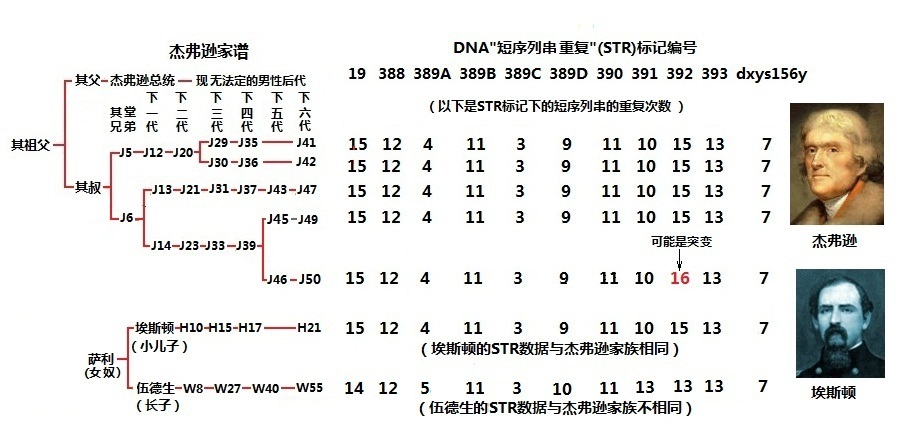

|
二．美国第三位总统私生子疑案
1.谁是托马斯·杰弗逊的私生子？
托马斯·杰弗逊(1743－1826)，美国独立战争期间的主要领导人之一，《独立宣言》的主要起草人，先后担任了美国第一任国务卿、第二任副总统和第三任总统。与华盛顿、林肯以及罗斯福一起被公认为美国历史上四位最伟大的总统。他虽然建立了卓世功勋，但也是一个富有争议的人，有关他与黑人女奴的恋情及私生子的传闻，一百多年以来，众说纷纭，争论不休。最终，这一历史悬案赖于Y染色体DNA解码，给出了答案。
杰弗逊的妻子玛莎是一位美丽的白人女子，但是很不幸，1782年，玛莎在为杰弗逊生下最小的女儿莫莉后，便离他而去。弥留之际，她要求丈夫绝不再娶，时年39岁的杰弗逊含泪答应了。杰弗逊自此，也再没有举行过婚礼。5年后，杰弗逊被任命为美国驻法国大使，玛莎同父异母的妹妹，十几岁的萨莉(1773－1835)跟随他来到巴黎，以照顾杰弗逊的生活。萨莉的外祖母是一位黑奴，外祖母和她的白人主人生下了萨莉的妈妈。按照当时的法律，萨莉的妈妈仍然是黑奴。萨莉的妈妈和杰弗逊的岳父，即杰弗逊的妻子玛莎的父亲生下了萨莉。虽然萨莉是一位只有四分之一黑人血统的美丽姑娘，然而，依照当时的法律，她依然是一位没有自由的女奴。自此，她和杰弗逊在一起生活了三十几年，却没有妻子的名分。
萨莉一共生了4个孩子，但由于她卑微的女奴地位，在相当长的时间里，人们并不关注她的孩子。她的大儿子伍德生-Woodson生于1790年，最小的儿子埃斯顿-Eston生于1808年。这位可能只有八分之一黑人血统的埃斯顿，不但长相和杰弗逊相似，而且也有着政治方面的才能，最终还打入了威斯康星州的政治界。
然而，作为总统的杰弗逊，因政治声誉所累，却从来不承认他和萨莉共同所有的孩子。在一段时期内，这个问题屡屡成为政治较量的筹码，而后又成为遗产继承的官司，一百多年来，一直是无法解开之谜。
1997年，这个历史悬案有了转机，著名病理学教授福斯特博士(Eugene A. Foster)提出了一个 “Y染色体追寻计划”，以求解开杰弗逊孩子血缘之谜。当时，Y染色体多代亲子鉴定已被肯定，线粒体夏娃理论也已建立，Y染色体亚当理论刚好在这一年提了出来，可以说在理论和技术上都已水到渠成，福斯特教授这一计划也就有了实现的基础。
2.私生子之谜终究被Y染色体的研究揭开
本来解决杰弗逊私生子之谜的最简单方法，是将自称是杰弗逊总统后裔的Y染色体，与杰弗逊总统遗体Y染色体样本加以比较就可以了。然而，开一个总统的棺去验尸是一件不可能的事情。由Y染色体亚当理论提出的、利用现代人的DNA去追寻杰弗逊总统这位祖先的方式就成为唯一可行的途径。其方法是比较杰弗逊子孙和可能是私生子的子孙们的Y染色体，如果相同，就可能都是杰弗逊的后代，否则“疑是的子孙们”就不是杰弗逊的子孙。但，很可惜，杰弗逊惟一的儿子在儿童时期就夭折了，根本就没有后代。有幸的是托马斯·杰弗逊总统有一个叔叔，名叫斐尔德，他留有不少的后代。几经努力，福斯特教授终于和杰弗逊叔叔的5名后代联系上，并采集了他们的血样。福斯特教授也顺利地采集到女奴萨利的大儿子伍德生和最小儿子埃斯顿后裔的血样。,经过一批分子人类学家的通力合作，测定终于取得成功。1998年11月，英国《自然》杂志刊登了这份 DNA检测报告，这个报告可以归结到下面的这一报告附图上(加了中文说明和简化)。可以看到，在11个STR位点上，埃斯顿后裔的血样STR重复数与杰弗逊5位后裔的STR重复数基本相同。毫无疑问，埃斯顿承继着杰弗逊家族的Y染色体。但是，大儿子伍德生却是相反的结论。

2001年，托马斯·杰弗逊遗产协会组织了一个13人的独立委员会，写了一份565页的报告，说埃斯顿极其可能是托马斯·杰弗逊的弟弟伦道夫·杰弗逊的儿子。DNA证据实在太强悍了，他们无法否定埃斯顿是杰弗逊家族的。这个独立委员会也太聪明了，他们知道兄弟之间的Y染色体可能完全是相同的，“弟弟的儿子”论点是既不能证明对，也无法证明错。既认同科学的证据又维护了杰弗逊的遗产和名誉。当然，这也反映了Y染色体追寻的限定性。
本文对于上述的是是非非就不做深究了。其实关于托马斯·杰弗逊家族的Y染色体还有很多后续研究。对于全世界人类的父系、母系族谱脉络，最权威的是位于美国纽约的冷泉实验所和国际遗传谱系协会。冷泉实验所曾产生过8位诺贝尔获奖人，它的下属“基因组织”每年都要根据世界各国提供的Y染色体测试结果，更新全世界人类的父系图谱。托马斯·杰斐逊家族的Y染色体最终归结为K2类单倍群(见本文最后所附父系树图)，而且我们每一个人都会属于其中的一个特定单倍群，可以说我们每一个人都是这颗父系大树上的一片叶子。
上一页 1 2 3 4 下一页 回主页
|